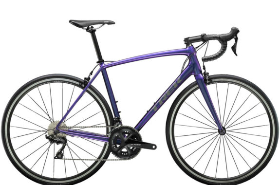

改めて私について
私は高専の学生で授業ではプログラミングなどいついても勉強するのですが、
やっていくうちに自分オリジナルのホームページも作ってみたいなと急に思いました。
学校ではまだＣ言語の基礎しかやっていないんですけど、また違った分野のプログラミング言語
もいいなと思ってこの記事を書いたのが始まりです。
私の目的を端的に述べると、
html
や
css
などについて深く知りたいと思ったからです。
(※この記事は初めてということで、htmlとcssのみでしか書かれていません。)
僕の好きなものやハマっているものについて
| 1.anime | リゼロ、異世界おじさん、転スラ・・・ |
| 2.自転車(ロードバイク) | trek,derosa,bianchi(ほしいー) |
| 3.programming | C,C++,html,css,python |
1.anime
まず、単純に言うと私は異世界もののアニメが好きです。
リゼロはもとは見たことがなかったのですが、
ペテルギウス・ロマネコンティ
だけは小学生の頃から知っていました。(笑)
いやーペテルギウス面白いですよねー
怠惰ですねーとか小学校の時独り言で言ってる人がいて今でも頭から離れません。
一応好きなアニメはもっとあるのですが、今回の記事は手短にしておきたいと思います。
2.ロードバイク
これは最近はまりました。もともと通学のときに電動自転車を使っているのですが、
どうも物足りない気がして、今現在自転車を買おうとお金をためている最中です。
何で物足りなさを感じたのかというと、単純に電動自転車だとスピードを出せないですし、
何よりも距離が長くなればなるほど電動自転車では補わなければいけない問題が発生してしまう
ので、ここは思い切ってロードバイクを買うべきだと感じました。今のところ、trekの↓がいいと思っています。
もし、ロードバイクを買ったら土日は結構遠くにサイクリングに出かけられるので、楽しみです。

3.Programming
プログラミングは高専に行ってから学び始めたのですが、端的に言ってしまうと僕は初心者です。
最初はｃ言語から始めたんですけど、ある程度学んで簡単なオセロゲームを作ろうとして挫折してしまいました。
ｃ言語はよくポインターが山場と言われていますが、僕はポインターをどう応用できるようになるかが
山場だと思っています。ちなみに、オセロゲームの作成のどの段階で挫折してしまったのかというと、
一人でもできるオセロゲームを作っていたので、対戦相手のAIを作る段階で自分の知識不足を
痛感してしましました。
話は変わって僕が他に経験したことのあるプログラミング言語は上の表のとおりです。
今こうして書いたhtml文章も初心者ながら頑張ってcodeを組んだものなので、
温かいも目で見てもらうとありがたいです。